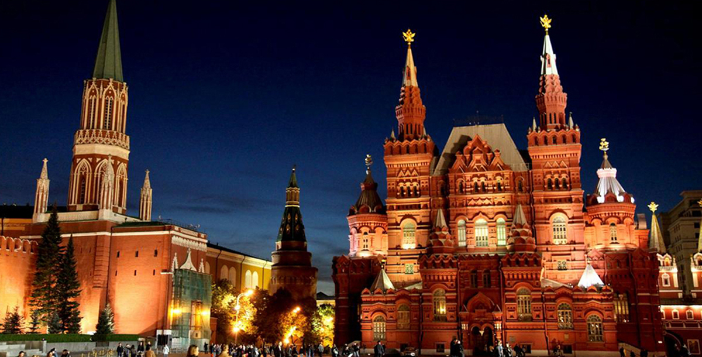

Росси́я или Росси́йская Федера́ция (РФ) — государство в Восточной Европе и Северной Азии. Территория России в её конституционных границах составляет 17 125 191 км²; население страны (в пределах её заявленной территории) составляет 146 780 720 чел. (2019). Занимает первое место в мире по территории, шестое — по объёму ВВП по ППС и девятое — по численности населения. Столица — Москва. Государственный язык — русский.
 Узнать больше о РоссииТерритория страны делится на 4 природных пояса (арктический — побережье и острова Северного Ледовитого океана; субарктический — Полярный круг; умеренный — Центральная Россия, Западная Сибирь, Дальний Восток; субтропический — побережье Черного моря, Кавказские горы) и 11 природных зон. Большая часть территории России находится в зонах континентального и арктического климата. Климат Центральной России характеризуется незначительными перепадами температур. Зимой средняя температура здесь составляет -10°С, а летом — +20°С. В Западной Сибири зимой температура воздуха может опускаться до -40°С, а летом, в среднем, +20°С. Самые низкие температуры — в Восточной Сибири. В поселке Оймякон в Якутии отмечена самая низкая температура (-72°С). Летом здесь прохладно и влажно, температура, в среднем, +19°С. Наиболее холодный месяц года в России — январь, на берегах морей — февраль. Снег начинает выпадать в октябре-ноябре, а заморозки продолжаются до конца марта. Побережье Черного моря — единственный регион страны, где даже зимой температура не опускается ниже нуля, а снег бывает очень редко. Арктический природный пояс практически не пригоден для проживания. Он характеризуется долгой морозной зимой и холодным летом, продолжающимся всего 2-3 недели. Практически вся территория занята вечной мерзлотой, средняя температура января — -27°С, июля — +5°С. Разница во времени Из-за огромной территории Россия делится на 11 часовых поясов. Каждый субъект РФ входит в одну часовую зону, исключая Якутию, территория которой расположена в трех часовых зонах. Основным считается московское время (UTC +3). Переход на летнее время не осуществляется.

Российская Федерация является многонациональным государством, что отражено в ее основном законе – Конституция. В России проживает более 190 различных народов мира. Традиции толерантности и дружественного отношения к представителям различных этносов складывались на протяжении многовековой истории российского государства. Народы России говорят более чем на 100 языках и диалектах. В России бережно сохраняется и развивается культурное наследие, проживающих в ней народов. Россия исторически развивалась как многоконфессиональное государство. Сегодня также поддерживается религиозное многообразие. Православное христианство является основной религией по численности ее приверженцев – более 75% населения. Ислам, католицизм, буддизм, иудаизм – также весьма распространены в России. Для верующих открыты двери храмов, мечетей, дацанов и синагог.
Российские Поля